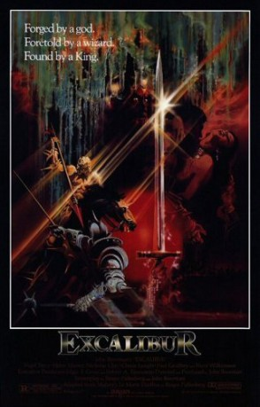

#5213 Excalibor - Das Schwert des Königs
Alternativ: Excalibur
Auszeichnungen: für 1 Oscars nominiert
 
 IMDB-Wertung: 7.4 / 10
IMDB-Wertung: 7.4 / 10  Metascore: 0
Metascore: 0 
The myth of King Arthur brought once again to the screen. Uthur Pendragon is given the mystical sword Excalibur by the wizard Merlin. At his death Uthur buries the sword into a stone, and the next man that can pull it out will be King of England. Years later Arthur, Uthur's bastard son draws Excalibur and becomes king. Guided by Merlin, Arthur marries Guenivere and gathers the Knights of the Round Table. Arthur's evil half-sister Morgana sires a son with him, who may prove his downfall.
Jahr: 1981
Dauer: 140 Minuten
FSK: 12
Land: USA Studio: Orion PicturesTonspuren: DD1.0 - ,
Untertitel: Deutsch,
Auflösung: 1080p (1920x1080) Größe: 11980 MB
Genre: Drama, Abenteuer, Fantasy, Liebe
Regisseur:  John Boorman
John Boorman
Drehbuch: Jenaro Prieto
Soundtrack:
Darsteller:
- Nigel Terry als King Arthur
 Helen Mirren als Morgana
Helen Mirren als Morgana- Nicholas Clay als Lancelot
- Cherie Lunghi als Guenevere
- Nicol Williamson als Merlin
 Gabriel Byrne als Uther Pendragon
Gabriel Byrne als Uther Pendragon- Keith Buckley als Uryens
- Katrine Boorman als Igrayne
 Liam Neeson als Gawain
Liam Neeson als Gawain- Corin Redgrave als Cornwall
 Patrick Stewart als Leondegrance
Patrick Stewart als Leondegrance- Clive Swift als Ector
 Ciarán Hinds als Lot
Ciarán Hinds als Lot- Charley Boorman als Boy Mordred
- Paul Geoffrey als Perceval
- Robert Addie als Mordred
- Niall O'Brien als Kay
- Liam O'Callaghan als Sadok
- Michael Muldoon als Astamor
- Gerard Mannix Flynn als Mordred's Lieutenant
- Garrett Keogh als Mador
- Emmet Bergin als Ulfius
- Barbara Byrne als Young Morgana
- Brid Brennan als Lady in Waiting
- Kay McLaren als Aged Morgana
- Eamon A. Kelly als Abbot
- Hilary Joyalle als Lady of the Lake , uncredited
- Prudence Wright Holmes als Sunshine , uncredited
Datei: X:\1981\Excalibor - Das Schwert des Königs (1981, FSK12, 1920x1080).mkv seit 02.01.2017
Festplatte: HD 1980-1986
 Es gibt insgesamt 33 Filme in der Gruppe '1981'
Es gibt insgesamt 33 Filme in der Gruppe '1981'